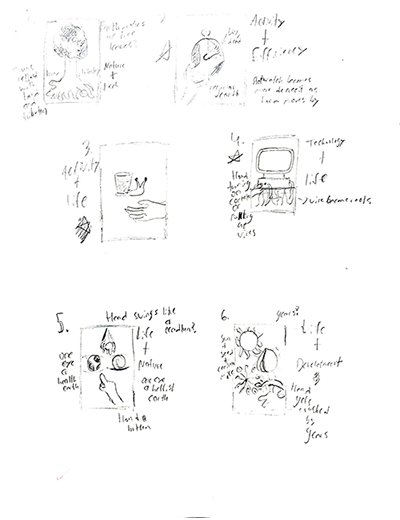
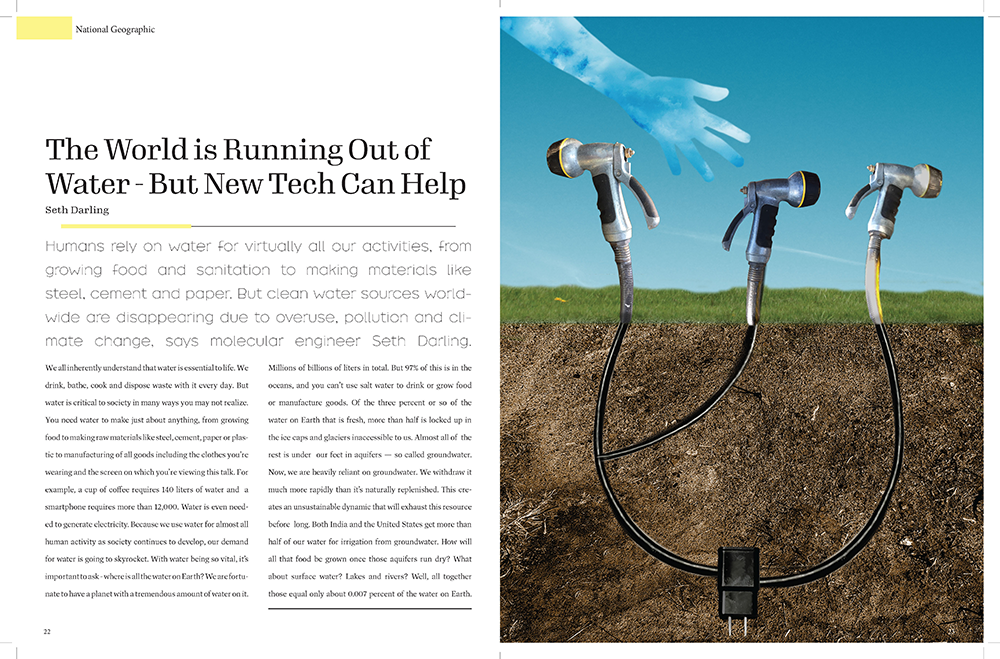
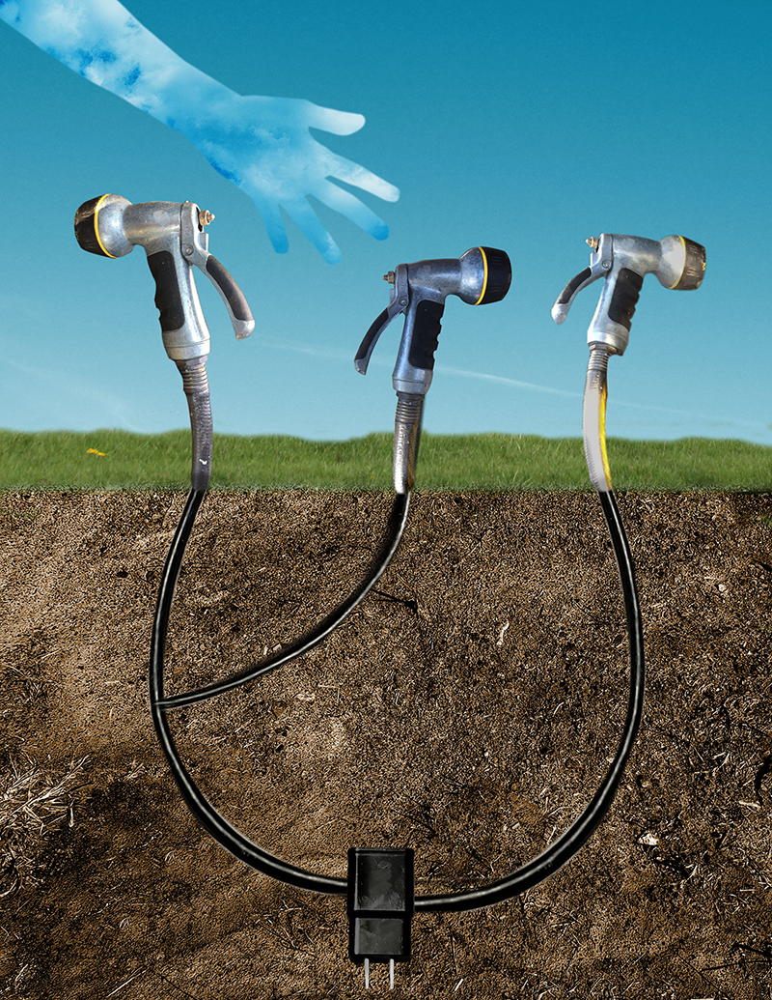

This was a magazine spread I made based on a TED Talk by Seth Darling,
in which he offered his solutions to help conserve the Earth's water. The
image itself in the spread is a visual metaphor about using the technology
proposed in the TED Talk to grow a sustainable future.
The Ideation
For this project, around 20 thumbnail sketches were
drawn up. The ideas present in them were inspired by
a word table created while watching the TED Talk,
which was designed to generate endless possibilities
for concepts.
The Finish Line
 After narrowing down three sketches and creating mock-ups, a concept based on growing hoses was chosen for the final spread.